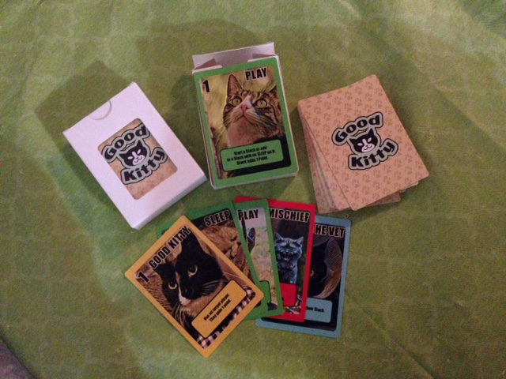
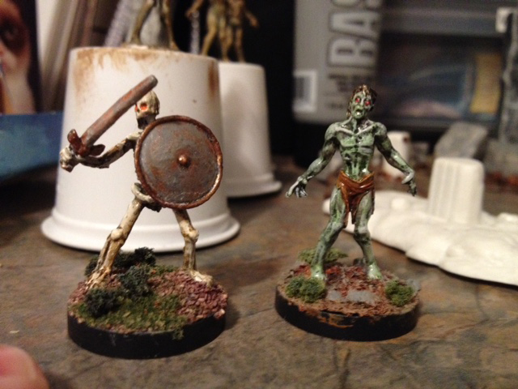
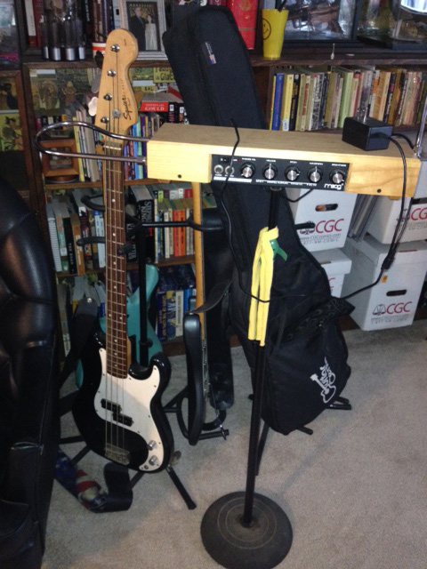
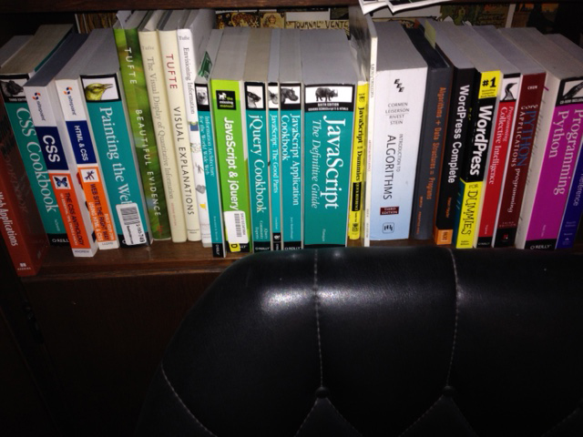
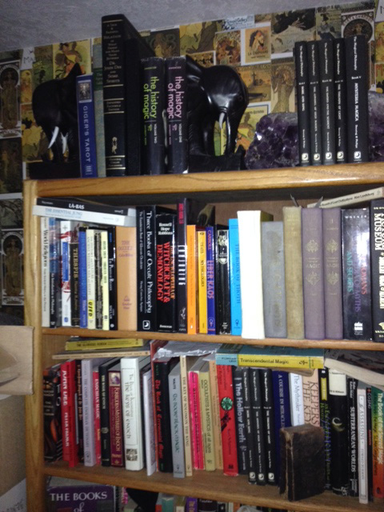

Andy Grossberg
andy.grossberg@gmail.com
503-659-5626

ABOUT ME
I have worked diverse jobs in the comics and high tech industries since the 90's.
In comics I've done everything from lettering, language localization, writing, editing, and even publishing (via Image Comics). I've written comics that have sold hundreds of thousands of issues (Spawn #19 and #20). I wrote and edited for the genre culture magazine Tripwire. I have also written articles and contributed to white papers as managing editor for Multimedia Week and Media Device Report at Jon Peddie Associates. I have even tested software and led teams localizing content for companies like Electronic Arts.
PRIMARY TALENTS:
- Writer
I've been writing for as long as I can remember. As a little kid my friend and I put out a hand-wrriten newspaper called the Dog Daily News. As an adult I wrote two issues of the comic Spawn that together sold almost 700,000 copies. I've also written dozens of articles and contributed to whitepapers on high tech topics like interactive TV and internet IPOs. I've also written genre articles and interviewd some great fantasy creators such as Michael Moorcock (Elric).
- Editor
I was managing editor for two high end newsletters called Multimedia Week and Media Device Report back during the first dotcom boom. I later went on to edit the genre culture magazine Tripwire where I commissioned and copy-edited articles from a dozen contributers while writing some myself. I have also edited copy for startups including my own.
- Digital Media Consultant
My consulting days are also attached to my time at Jon Peddie Associates where we gathered and disseminated market and business intelligence for Fortune 100 companies like Microsoft and Intel. After leaving them I did a brief stint consulting for the likes of Ziff Davis, Fujitsu, and others.
- Localizer
Localizing content means taking files of raw English translations from another language and editing the content into everyday spoken English. I got my start doing this at EA/MAXIS leading teams translating and localizing The Sims for various consoles. Later I took freelance work through Studio Cutie localizing manga scripts as a subcontrsactor for Dark Horse Comics. I still do this today from time to time.
- Jack-of-all-Trades
It's hard to put into words the number of things I know about or can do a little bit of. I soak up information and trivia like a sponge. I am capable of learning almost any technology process given a decent lead for my learning curve. I have an underlying grok of all things tech and this framework lets me incorporate concepts that are new to me into my workflow and knowledge base at a rapid pace.
PROJECTS
Here are some of the projects I have worked on at Epicodus:
- TRACK SUGGESTER -- An Epicodus class track questionaire that makes suggestions based on your answers. Uses jQuery, CSS, and HTML
- QUIZ -- A compatibilty test matching you with a celebrity. Uses jQuery, CSS, and HTML
- VOTE -- A voting 'how-to' page helping you with voting information. Uses jQuery, CSS, and HTML
- CODE -- A simple form that practices some lessons. Uses just CSS and HTML
HOBBIES
I have many diverse interests, almost too many to name.
There are so many things I like to do, it's ridiculous. From playing and running RPGs to AI; from following baseball to playing music; from reading about politics to watching movies and TV; from dabbling in the supernatural, to everything about comic books. Computers have always played a big part in my interests as nonted elsewhere although I can't claim them as a hobby in general (they're just tools). Frankly, I have too many hobbies but I never want for variety, maybe just for the time to do it all. But if I had to whittle them down to a list of the top things I like, they'd be:
Favorite Hobbies:
- Game Design

I've been designing games as a hobby for about ten years. I have yet to publish one but I am contantly receiving great feedback about my games from play-testers at conventions and meetup groups.
- Role-playing games

I have been playing role-playing games since the Monster Manual for Advanced Dungeons and Dragons came out in 1978. I am always asked to DM though I prefer to play asa a character. Lately I've taken back up painting miniatures.
- Making Music

I haven't been playing live music for a really long time. I've recorded a few songs lately but none as good as the stuff that I did with my old San Francisco band BOO. Here's a song I wrote and sang with them. Check it out:
Astral Projection - Programming

I have dabbled in programming since high school. I have a library of books covering topics like Python, WordPress, algorithm design and of course HTML, CSS and Javascript. The latter three I am only now beginning to really get since I began Epicodus.
- The Supernatural

I've had a fascination for ufo's, cryptids, and especially the supernatural and occult since I was a child. I got my first tarot deck when I was 14. My library includes some fairly rare books and interesting printings.
EXPERIENCE
I'm a multi-disciplined writer / analyst / editor with experience across a broad range of technology and genre culture fields and formats.
I have worked many jobs and worn many hats but I will elevate any high tech or writing project I am involved with.
SKILLS:
- Writing
- Editing
- Publishing
- Adobe Creative Suite
- Web Production
- Content Management Systems
- Strong Collaborative Skills
- Project Management
WORK HISTORY:
- 02/2004 to NOW: Project Manager Studio Cutie -- Portland, OR
I letter comics, localize script translations from Japanese and French. Manage creative contractor teams to produce publish-ready work.
- 03/2011 - 03/2016: Co-Founder, Chief Creative Officer Comic Rocket -- Portland, OR
I started a digital comics website as part of the Portland Seed Fund's first class. Maintained artist relationships, handled communications, wrote copy, plotted corporate strategy, and wore many other hats.
Comic Rocket - 03/2007 - 12/2010: US Editor Tripwire Magazine -- London, UK (remote)
I wrote and edited copy, conceived and commissioned stories, handled public interface, planned strategy
- 01/2004 - 02/2004: Team Lead MAXIS -- Walnut Creek, CA
I was Localization Lead for Sims and other projects. Wrote and implemented test plans, developed test processes, literally wrote the book on testing for the department, managed teams, balanced multiple projects simultaneously.
- 08/2002 - 01/2003: QA Tester EA -- Redwood Shores, CA
Tested games for EA. Went from temp to fulltime and led a team from EARS to MAXIS to test Sims products.
- 12/2001 - 08/2002: Owner The Convergence Report -- San Francisco, CA
Published a tech newsletter focused on giving the straight story with no fluff. I also did all the desktop publishing and marketing.
- 08/1999 - 02/2001: Analyst / Editor Jon Peddie Associates -- Tiburon, CA
Started as Business Editor for Multimedia Week, contributing articles on IPOs. Went on to co-create Media Device Report as managing editor. Also contributed to white papers and wrote articles on videogames, interactive TV, and STBs.